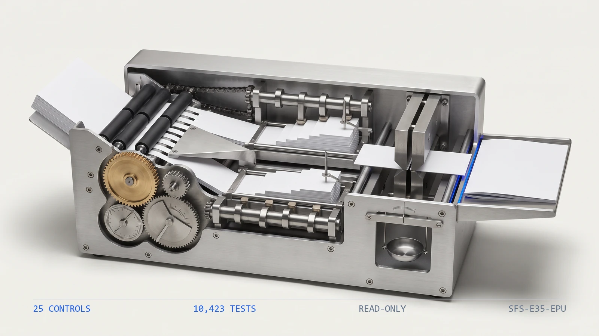

10,4231
Tests
the collected checks that pin this engine's behavior
ENGINE 35
SFS-E35-EPU · EQUITY METHOD · REV 2026-07-24 · PRODUCTION
PRODUCTION = runnable end-to-end, CI-backed, full test suite passing. All data fictional and seeded.
Does the pickup re-derive from ownership, and does the elimination extinguish the carrying value?
A reporting group consolidates its subsidiaries and joint ventures one holding at a time, and every period three things must hold at once: each parent's equity pickup equals its ownership share of the sub's net income, the investment carrying value rolls forward as begin + contributions + pickup - distributions = end, and on consolidation every Investment account is extinguished against the sub's Equity-Parent account so each entity block nets to zero. Around those sit the feeding schedules -- a preferred-return accrual built on a day count, and a member allocation that must sum back to the income it splits and tie to the trial balance. This engine reads the eight artifacts the consolidation file carries -- the entity register, the holding register, the sub results, the investment roll-forward, the elimination schedule, the preferred-return schedule, the member allocation and the trial balance -- and runs twenty-five deterministic controls over them, in six families. Is the file complete. Does every roll-forward row foot, name a registered holding, cover every holding exactly once, and carry the ownership share of the sub's declared distributions. Does each pickup recompute as ownership x sub net income, do cost-method holdings book none, is ownership in bounds and never over-allocated, and does every holding resolve to registered entities and a result row. Does every elimination block self-balance, is every equity holding paired investment-to-equity, is the full carrying value extinguished, does every block name a real equity holding, and do the GL accounts follow the company-code link key. Do the preferred-return day counts, accruals, capital chain and period continuity re-derive from the schedule's own dates and rates. Do the member allocations foot and sum to exactly the sub's net income, is every member a holder, and do the investment, pickup, should-be and adjustment columns of the trial balance tie out. It compares every figure with exact ==, rebuilds every pickup and share through the shared kernel that produced the data with the residual cent to the final holder, and never writes to a source artifact.
An equity-method workpaper looks like the most mechanical page in the close: a percentage times an income, a four-line roll-forward, a pair of eliminations that cancel. That is exactly why it drifts. Three failures hide inside it and none of them look wrong on their own page. The pickup drifts from the ownership math -- somebody keys it, or carries last quarter's percentage, and the parent books a share its ownership does not produce, or routes a pickup through a holding carried at cost that should book none. The elimination goes stale -- the carrying value moves all period but the entry does not, leaving a residual on consolidation that is neither an asset nor equity, or a holding is never paired to the sub's equity at all and the same net assets survive twice. And the rollup drifts from the evidence -- the trial balance carries a should-be column nobody re-derives, member allocations stop summing to the income they split, and a preferred-return accrual compounds a day-count error forward period after period. The engine rebuilds every pickup, share, accrual and tie from the base facts through the same kernel that produced the data and compares with exact ==, proves an elimination extinguishes rather than merely balances, ships a planted-defect file for every registered control, and states its benchmark as a command rather than a claim. A mis-keyed pickup, a stale elimination or a should-be nobody recomputed is invisible until consolidation stops netting to zero.
Six control families run in registry order over each consolidation file. The first proves the others had something to read, because a control that passes on an absent artifact reports assurance it never performed.
A reporting group carries its subsidiaries and joint ventures under the equity method, booking each interest once as an investment and then holding three things true at the same time every period: the equity pickup it books must equal its ownership share of each sub's net income, the investment carrying value must roll forward as begin + contributions + pickup - distributions = end, and on consolidation every Investment account must be extinguished against the sub's Equity-Parent account so each entity block nets to zero. Three failures hide inside that, and none of them look wrong on a footed page. The pickup drifts from the ownership percentage -- a share of income the percentage does not produce, or a pickup routed through a holding carried at cost that should book none. The elimination goes stale -- the carrying value moved all period while the entry did not, leaving a residual that is neither an asset nor equity, or a holding never paired to the sub's equity at all so the same net assets survive twice. And the rollup drifts from the evidence beneath it -- a should-be column nobody re-derives, member allocations that stop summing to the income they split, a preferred-return accrual that compounds a day-count error forward. None of these are judgment calls. They are equalities, membership tests and date arithmetic -- a pickup against ownership x net income with exact ==, a carrying value against the roll-forward it ends at, an accrual against capital x rate x days/basis -- which a deterministic control settles better than a spreadsheet inherited by whoever maintains the consolidation this year.
The seeded demo runs every control over every consolidation file7. The CLI generates twenty-seven fictional consolidation files -- one clean baseline and one carrying each of the twenty-six planted defects -- then runs all twenty-five controls over each. The clean file returns PASS with no flags; every defect file returns REVIEW or FAIL and names the control it tripped along with the reason that control exists.
A balanced elimination can still be stale8. One defect file moves both sides of an elimination block down by the same amount, so the block still balances and elim_block_balances holds -- but it now credits last period's carrying value rather than the value the roll-forward ends at, and elim_extinguishes_investment fails. The two controls are independent by design: balancing is not extinguishing, and a residual survives on consolidation until the block ties to the ending carrying value.
The pickup is recomputed, not read back9. A defect file adds to the booked pickup and absorbs the same amount into contributions, so the roll-forward identity still foots and rf_identity holds. epu_pickup_rederives rebuilds the pickup from ownership x the sub's net income through the shared kernel and fails, proving the pickup is recomputed from the base facts beneath it rather than trusted as stated -- and alloc_tb_pickup_ties then ties the ledger to that re-derived share, not the stated one.
| Command | Operation | Output | Exit | Artifacts |
|---|---|---|---|---|
python run.py | regenerate the seeded fictional corpus, run all twenty-five controls, write both reports | per-file verdicts and every actionable finding, then the overall verdict | 2 for the bundled corpus, which carries a planted defect for every control by design | epu_report.json, epu_report.md, samples/ |
python -m pickup_engine samples | analyze an existing folder of consolidation files without regenerating it | per-file verdicts and findings | 0 PASS / 1 REVIEW / 2 FAIL / 3 usage | none unless --json or --md is passed |
python -m pickup_engine samples --generate --quiet | regenerate the corpus and print only the overall verdict | a single verdict line | 0 PASS / 1 REVIEW / 2 FAIL / 3 usage | samples/ |
python -m pytest pickup_engine/tests -q | run the full test suite for this engine | 10423 passed | 0 when every test passes | none |
| Measure | Result |
|---|---|
| Engine tests10 | 10,423 tests collected live collection from the engine directory |
| Registered controls11 | 25 controls counted from the registry, not from documentation |
| Planted defects12 | 26 defect files every registered control has at least one file that trips it |
| Control coverage13 | 100 percent of controls with a planted defect no control ships without a file demonstrating it firing |
The engine has no write path and therefore no autonomy to gate. It produces findings; a person decides whether a figure is carried into consolidation and whether a derived adjustment is posted.
Deterministic envelope. seeded fictional inputs, read-only operation, offline default mode.
Demo gate. FAIL on the bundled corpus, by design -- it carries a planted defect for every registered control
| Severity | Verdict | Action |
|---|---|---|
| No findings above PASS | PASS | carry the mechanically clean consolidation file into the documented sign-off and consolidation review |
| One or more FLAG, no FAIL | REVIEW | a human resolves each flag; a trial-balance adjustment that is internally consistent but has not been posted lands here |
| One or more FAIL | FAIL | the figure is not carried into consolidation until the failing control is cleared -- a pickup that does not recompute, an elimination that does not extinguish, an identity that does not foot, or a tie the trial balance does not hold |

Distribution: public repository, MIT license.
One conversation: you describe the work that consumes your team's month; we tell you plainly what this engine can take over, what it can't, and what a scoped first phase would cost. Your people keep approval authority.
Book a free consultation